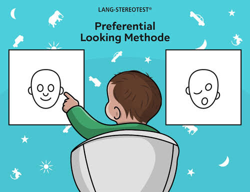

Paradigma intermodal de preferencia de mirada
El paradigma intermodal de preferencia de mirada sirve para evaluar si un bebé o un niño pequeño comprende lo que escucha en relación con lo que ve. Esto consiste en mostrarle dos imágenes o videos, uno al lado del otro, mientras se nombra solo uno de ellos, y medir cuánto tiempo mira cada uno, aprovechando que bebés y niños pueden emparejar lo que oyen con lo que ven. Se ha usado desde los 4 meses y medio de edad y, en los experimentos de comprensión del lenguaje, con niños de 18 meses a 3 años.
¿Cómo se aplica?

- El bebé se sienta en el regazo de un adulto y ve dos imágenes o videos, uno al lado del otro, mientras se nombra uno de ellos (Barón Birchenall et al., 2014, p. 84).
- Primero aparece un estímulo (un rostro o una luz centelleante) en el centro de la pantalla, para atraer la atención del bebé.
- Luego hay una prueba silenciosa, para comprobar que las dos imágenes le llaman la atención por igual (p. 84).
- Después se superpone el estímulo auditivo que corresponde a una de las imágenes, y se mide el tiempo que el bebé fija la mirada en cada una (p. 84).
- Muchos experimentos tienen fases de identificación de personajes, aprendizaje, línea base y prueba (Mariscal et al., 2012, p. 281).
- La línea base usa un mensaje neutro, como "Mira ahora", para comprobar que el niño no prefiere una imagen por sí sola (p. 281).
- Las cámaras suelen estar ocultas y solo se ven las pantallas (Mariscal et al., 2012, p. 280).
- Se puede usar un rastreador ocular para registrar hacia dónde mira (Barón Birchenall et al., 2014, p. 85).
Las pautas para estudiar el aprendizaje de palabras: primero hay ensayos de entrenamiento en los que una imagen se acompaña de una palabra, luego en la prueba aparecen dos imágenes y se dice una palabra. Este uso tiene limitaciones: en este caso puede sobreestimar lo que el niño sabe, porque a veces elige la imagen por descarte.
Variación para aprender palabras: primero hay ensayos de entrenamiento, en los que una sola imagen se acompaña de una etiqueta. Luego, en la prueba, aparecen dos imágenes y se dice una palabra.
Barón Birchenall et al., 2014, pp. 84-85
Limitaciones
- Puede pasar por alto lo que el niño sabe, porque si el niño mira una imagen no siempre es porque reconoció la palabra: a veces descarta la imagen que no corresponde y se queda con la otra. También es difícil usarlo para saber si el niño entiende conceptos que no se pueden mostrar en una imagen; por eso conviene combinarlo con otras técnicas.
- Exige mucho del niño en muy poco tiempo: al ser una situación nueva, con imágenes, sonidos y objetos desconocidos, el experimento completo rara vez pasa de cuatro minutos, y la fase de prueba es solo una parte pequeña que suele quedar al final, cuando el niño ya está perdiendo el interés.
- Se pierden muchos participantes: algunos niños se van del experimento, se distraen o miran hacia otro lado. Si no pasan un mínimo de tiempo mirando las pantallas, se descartan del análisis, y por eso las muestras casi nunca superan los 40 niños.
- Los efectos son pequeños y a veces no aparecen: las diferencias en el tiempo de mirada suelen ser pequeñas, y hay intentos de replicar estudios que no encontraron ningún efecto.
- La interpretación es limitada: un experimento típico no explica la comprensión del lenguaje de forma completa, solo detecta si el niño relaciona lo que oye con lo que ve.
¿Qué mide o permite estudiar?

Este paradigma permite evaluar la detección de la correspondencia entre un mensaje verbal y una de las imágenes (Mariscal et al., 2012, p. 280). También sirve para medir el conocimiento floreciente en fonología, semántica, sintaxis y morfología en niños que aún no hablan (Barón Birchenall et al., 2014, p. 84).
Qué mide exactamente
- El tiempo que el niño mira cada imagen: la medida más frecuente es la proporción de tiempo que dedica a la pantalla que coincide con el mensaje que oye, llamada "pantalla correcta" (Mariscal et al., 2012, p. 284).
- Cómo se interpreta: cuando el niño mira más tiempo la pantalla correcta que la incorrecta, se asume que comprendió el mensaje (Mariscal et al., 2012, p. 280). Esa preferencia debe aparecer en la prueba y no en la línea base (p. 284). También pueden usarse el tiempo máximo que mantiene la mirada fija en la pantalla correcta y el número de veces que cambia de pantalla (Mariscal et al., 2012, pp. 289-290).
Qué permite estudiar
- La comprensión de palabras, porque se ve si el niño relaciona una palabra con lo que ella nombra (Barón Birchenall et al., 2014, p. 85).
- La comprensión de estructuras gramaticales, por ejemplo si distingue verbos transitivos e intransitivos (Mariscal et al., 2012, p. 281).
- La relación entre lo que se ve y lo que se oye: los bebés de 18 a 20 semanas miran más el rostro que pronuncia la vocal que escuchan (Barón Birchenall et al., 2014, p. 85).
- Hacia dónde dirigen la atención al escuchar hablar: se han hecho estudios sobre si los bebés miran más la boca o los ojos de quien habla (Barón Birchenall et al., 2014, p. 85).
Video o recurso audiovisual
Video de la revista JoVE sobre el paradigma intermodal de preferencia de mirada con niños pequeños. Muestra paso a paso cómo se aplica el paradigma: cómo se preparan los videos, cómo se presentan al niño y cómo se analiza después hacia dónde mira.
● Este video muestra cómo se aplica la técnica de eye-tracking que es el seguimiento ocular en bebés dentro del (Infant Action Lab de la Universidad de Nueva York (NYU). Se observa cómo los bebés llevan puesto un rastreador ocular portátil, una cámara pequeña sujeta a la cabeza que registra al mismo tiempo hacia dónde dirigen la mirada y el movimiento de sus propios ojos mientras interactúan libremente con su madre y con objetos. Sirve para ver de forma visual cómo esta tecnología permite estudiar la atención visual del bebé en situaciones naturales, no solo frente a una pantalla. Ejemplo: Cuándo mira el rostro de la madre, cuándo sigue el movimiento de sus manos o cómo usa la mirada para guiar el gateo o la marcha sobre distintas superficies.
Lecturas recomendadas
En español
González Aguirre, O. A., Laguna Navarro, I., & Alva Canto, E. A. (2020). Generalización de palabras en infantes hispanohablantes: El sesgo hacia la forma. Acta de investigación psicológica, 10(2), 5-16. Texto completo (PDF): redalyc.org .
Este estudio compara la capacidad de dos grupos de infantes hispanohablantes de 24 meses para formar nuevas categorías a partir de la forma y del color, usando el paradigma intermodal. Los resultados mostraron que los infantes formaron categorías a partir de la forma, pero no del color. Es una muestra de cómo se usa el método en una investigación real con niños que aprenden español.
En inglés
Golinkoff, R. M., Ma, W., Song, L., & Hirsh-Pasek, K. (2013). Twenty-five years using the intermodal preferential looking paradigm to study language acquisition: What have we learned? Perspectives on Psychological Science, 8(3), 316-339. Página de la revista, con el resumen: psychologicalscience.org .
Este artículo de revisión trata sobre 25 años de uso del paradigma intermodal de preferencia de mirada para estudiar la adquisición del lenguaje. Según los autores, el paradigma mide la comprensión del lenguaje a partir del tiempo que el niño mira dos imágenes presentadas lado a lado, cuando solo una coincide con lo que escucha. Permite explorar el conocimiento en fonología, semántica, sintaxis y morfología en bebés que aún no hablan, y ver cómo identifican la relación entre las palabras y lo que nombran. Además, hoy se estudia su posible valor clínico y diagnóstico.
Página web recomendada
Babylab de la Universidad de Plymouth (Reino Unido): psy.plymouth.ac.uk/babylab/Projects . Esta página es de un laboratorio que estudia cómo aprenden lenguaje los bebés. Explica la técnica con un ejemplo sencillo: se muestran la imagen de un perro y la de un gato mientras suena la frase "mira al perro", y se espera que desde los 12 meses el bebé mire más tiempo el objeto nombrado. Sirve para entender la idea del método con un caso concreto y en pocas líneas. También cuenta cómo son los estudios: duran entre 10 y 30 minutos. Además describe el procedimiento de preferencia de giro de cabeza.
Actividad lúdica: empareja lo que oyes con lo que ves
Dato llamativo

Entre los 4 y los 8 meses, al oír frases, los bebés miran cada vez más la boca de quien habla, tanto en su idioma como en uno extranjero. Hacia los 12 meses, solo con su idioma nativo vuelven a mirar más los ojos que la boca. Con el idioma extranjero, en cambio, los bebés de 12 meses no dirigen su atención a los ojos.
Los autores interpretan estos dos cambios así: mirar la boca podría ayudar al bebé a acceder a información audiovisual del habla, es decir, ver cómo se mueve la boca mientras oye los sonidos, lo que le permitiría aprender las formas del lenguaje. Volver a mirar los ojos reflejaba que ya tiene más experiencia con su idioma nativo, y eso le permite prestar atención a señales sociales. Con un idioma que no conoce, el bebé seguiría necesitando esa información de la boca para procesarlo.
Este hallazgo se logró con el paradigma intermodal de preferencia de mirada, usando un rastreador ocular: una cámara que registra hacia dónde mira el bebé en la pantalla. Es un ejemplo de lo que el método permite: saber no solo si el niño entiende, sino también cómo distribuye su atención mientras escucha hablar (Lewkowicz & Hansen-Tift, 2012, citado en Barón Birchenall et al., 2014, p. 85).